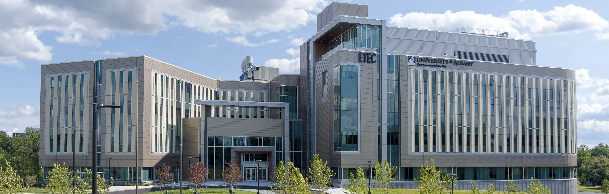

Home
Research
Publications
Teaching
People
Contact
Home
Research
Publications
Teaching
People
Contact

Our research focuses on the following areas:
1. Environmental risk assessment for emerging contaminants (e.g., PFAS, engineered nanomaterials)
2. PFAS treatment techniques (e.g., phytoremediation, hydrothermal liquefaction, adsorption)
3. Transport and fate of emerging contaminants in water and soil
Our findings will enhance understanding of the bioaccumulation of emerging contaminants, clarify their environmental and health implications, and contribute to addressing the pollution challenges they pose.